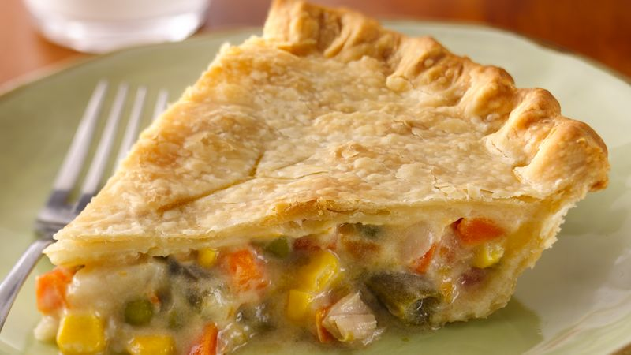

Chicken Pot Pie
Ingredients
2 cups diced peeled potatoes,
1-3/4 cups sliced carrots,
2/3 cup chopped onion,
1 cup butter, cubed,
1 cup all-purpose flour,
1-3/4 teaspoons salt,
1 teaspoon dried thyme,
3/4 teaspoon pepper,
3 cups chicken broth,
1-1/2 cups whole milk,
4 cups cubed cooked chicken,
1 cup frozen peas,
1 cup frozen corn,
4 sheets refrigerated pie crust.
Directions
- Preheat oven to 425°. Place potatoes and carrots in a large saucepan; add water to cover. Bring to a boil. Reduce heat; cook, covered, 8-10 minutes or until crisp-tender; drain.
- In a large skillet, heat butter over medium-high heat. Add onion; cook and stir until tender. Stir in flour and seasonings until blended. Gradually stir in broth and milk. Bring to a boil, stirring constantly; cook and stir 2 minutes or until thickened. Stir in chicken, peas, corn and potato mixture; remove from heat.
- Unroll a pie crust into each of two 9-in. pie plates; trim even with rims. Add chicken mixture. Unroll remaining crusts; place over filling. Trim, seal and flute edges. Cut slits in tops.
- Bake 35-40 minutes or until crust is lightly browned. Let stand 15 minutes before cutting.
Freeze option: Cover and freeze unbaked pies. To use, remove from freezer 30 minutes before baking (do not thaw). Preheat oven to 425°. Place pies on baking sheets; cover edges loosely with foil. Bake 30 minutes. Reduce oven setting to 350°; bake 70-80 minutes longer or until crust is golden brown and a thermometer inserted in center reads 165°.
Original Recipe
Contact Me
Email Me
32 Campus Drive
Missoula, MT 59801
